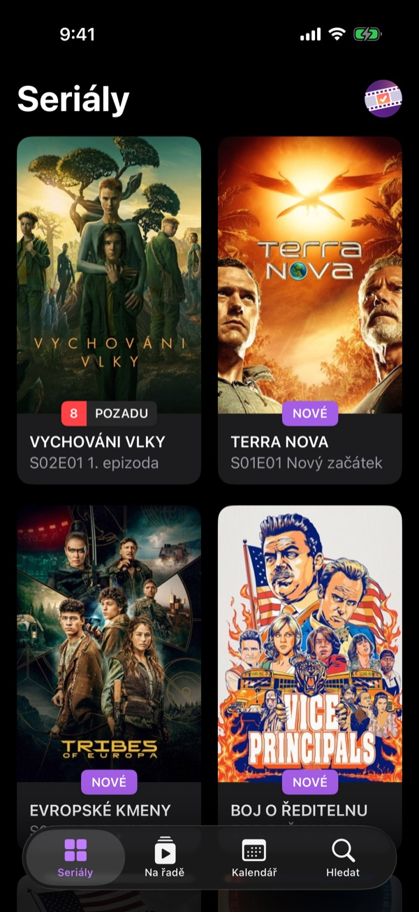
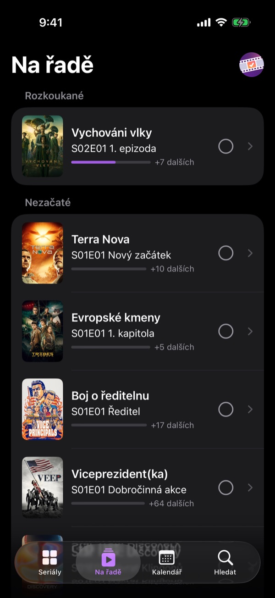
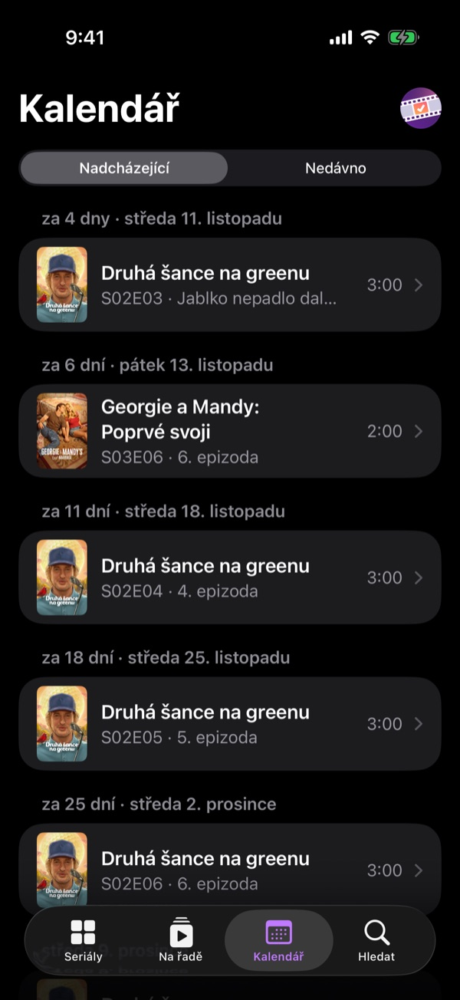
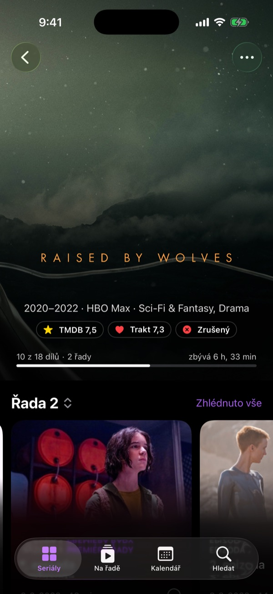

Víš, který díl je na řadě. Know which episode comes next.
SeriesTracker hlídá, kde ve kterém seriálu jsi, kdy vyjde další díl a co sledovat, až dokoukáš. Pro iPhone a iPad. SeriesTracker keeps track of where you are in every show, when the next episode airs and what to watch when you finish. For iPhone and iPad.




Co umíWhat it does
Upozornění na nové dílyNew episode alerts
Ozve se, když vyjde díl rozkoukaného seriálu nebo se blíží nová řada.
Get notified when a show you're watching airs a new episode or a season is about to start.
Pro tebeFor You
Tipy na další seriály podle toho, co máš v knihovně.
Suggestions for what to watch next, based on your library.
WidgetyWidgets
Další díly a premiéry na ploše i na zamčené obrazovce.
Next episodes and premieres on your Home Screen and Lock Screen.
Trakt a SimklTrakt and Simkl
Volitelně synchronizuje zhlédnuté díly a hodnocení s tvým účtem.
Optionally syncs watched episodes and ratings with your account.
Statistiky a rok v kostceStats and year in review
Kolik hodin jsi u seriálů strávil a co tě letos bavilo nejvíc.
How many hours you've spent watching and what you enjoyed most this year.
Hledání podle službyBrowse by service
Projdi, co běží na jednotlivých streamovacích službách, a zjisti, kde se seriál dá sledovat.
Browse what's on each streaming service and see where a show is available.
ZálohaBackup
Celou knihovnu vyexportuješ do souboru a kdykoli ji obnovíš.
Export your whole library to a file and restore it any time.
Zkratky a SpotlightShortcuts and Spotlight
Seriály najdeš ve vyhledávání systému a další díl odškrtneš i přes Siri.
Find your shows in system search and check off episodes with Siri.
Česky i anglickyCzech and English
Názvy a popisy seriálů v jazyce, ve kterém aplikaci používáš.
Show titles and descriptions in the language you use the app in.
Tvoje data zůstávají u tebeYour data stays with you
Knihovna, zhlédnuté díly a hodnocení se ukládají jen v zařízení. Aplikace nemá vlastní server, účet, reklamy ani analytiku.
Your library, watched episodes and ratings are stored only on your device. The app has no server of its own, no account, no ads and no analytics.
PodporaSupport
Potřebuju k aplikaci účet?Do I need an account?
Ne. Účet na Traktu nebo Simklu je volitelný a hodí se, pokud už tam historii sledování máš nebo ji chceš mít i jinde.
No. A Trakt or Simkl account is optional, useful if you already keep your watch history there or want it elsewhere too.
Jak se dostanu k betě?How do I join the beta?
Napiš na e-mail níže a pošlu ti pozvánku do TestFlightu. Stačí mít v iPhonu nebo iPadu iOS 26 a aplikaci TestFlight z App Store.
Email the address below and I'll send you a TestFlight invite. You need iOS 26 on your iPhone or iPad and the TestFlight app from the App Store.
Jak přenesu knihovnu do jiného zařízení?How do I move my library to another device?
V Nastavení vyexportuj zálohu a v novém zařízení ji obnov. Pokud používáš Trakt nebo Simkl, stačí se v novém zařízení přihlásit.
Export a backup in Settings and restore it on the new device. If you use Trakt or Simkl, just sign in on the new device.
Odkud jsou informace o seriálech?Where does the show information come from?
Seriály, díly a obrázky poskytuje TMDB, hodnocení a počty diváků Trakt a informace o streamovacích službách JustWatch.
Shows, episodes and images come from TMDB, ratings and viewer counts from Trakt, and streaming availability from JustWatch.
Něco nefunguje nebo máš nápad? Napiš naSomething not working, or have an idea? Write to plecityl@gmail.com